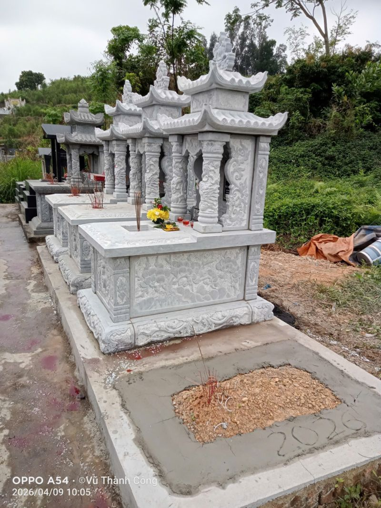
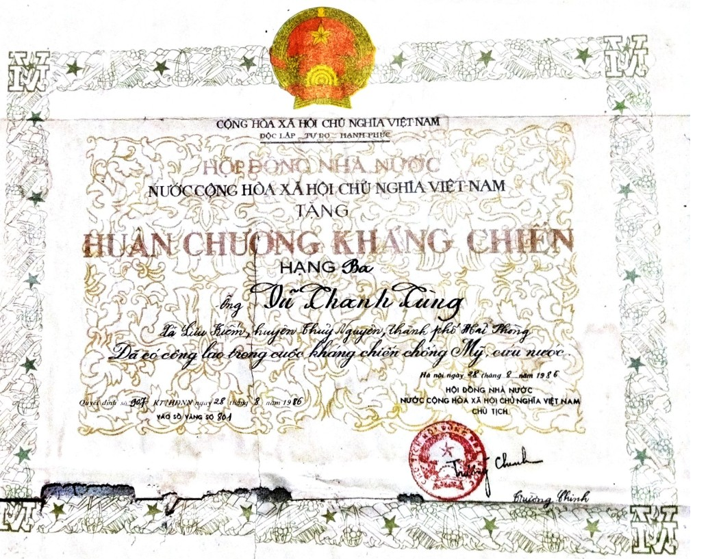
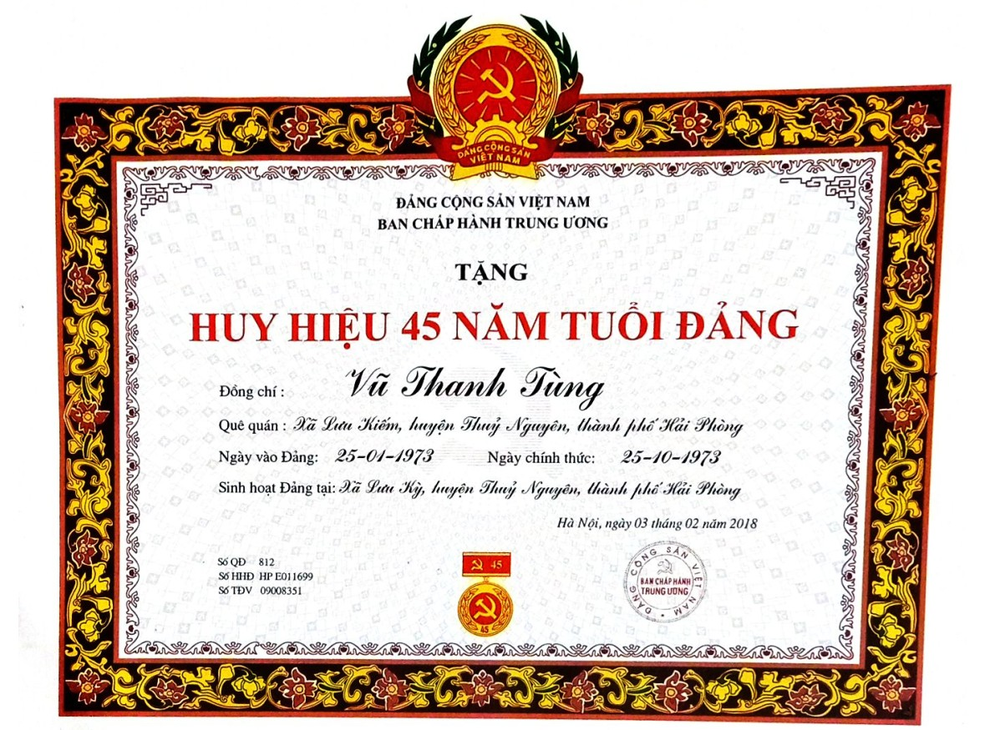
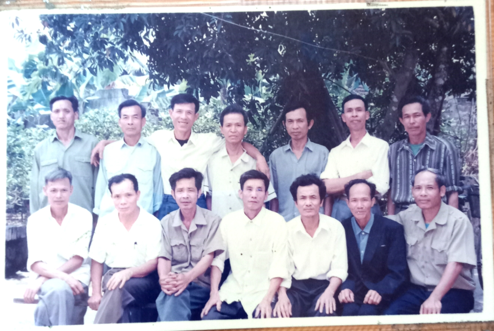

 Câu chuyện về cuộc đời ông Vũ Thanh Tùng
Câu chuyện về cuộc đời ông Vũ Thanh TùngTrong dòng chảy của lịch sử quê hương Hải Phòng, nơi những vùng đất ven sông giàu truyền thống cách mạng đã hun đúc nên bao thế hệ con người kiên trung, cuộc đời ông Vũ Thanh Tùng là một minh chứng tiêu biểu cho phẩm chất của người đảng viên, người lính và người công dân mẫu mực.
Ông Vũ Thanh Tùng sinh ngày 04 tháng 01 năm 1948 (năm Mậu Tý), tại thôn Phúc Nam, xã Lưu Kiếm, huyện Thủy Nguyên – một vùng quê giàu truyền thống cách mạng. Ngôi làng nơi ông lớn lên nằm bên dòng sông Móc (còn gọi là sông Lò Nồi), nối với sông Đá Bạch ở phía Bắc và sông Giá ở phía Nam – những dòng sông đã chứng kiến bao thăng trầm của quê hương. Sinh ra trong một gia đình nông dân nghèo, tuổi thơ của ông gắn liền với đồng ruộng, với những khó khăn nhưng cũng đầy tình người và tinh thần đoàn kết. Chính môi trường ấy đã sớm hình thành trong ông ý chí vươn lên, lòng yêu quê hương và tinh thần trách nhiệm với cộng đồng.
Năm 1965, khi đất nước đang trong giai đoạn kháng chiến ác liệt, chàng thanh niên Vũ Thanh Tùng đã sớm tham gia lao động sản xuất tại quê nhà, giữ vai trò tổ phó tổ sản xuất. Nhưng với khát vọng cống hiến lớn hơn, ông nhanh chóng lên đường nhập ngũ.
Từ tháng 8/1965, ông trở thành chiến sĩ trắc thủ trong đơn vị pháo binh. Với tinh thần cầu tiến, ông tiếp tục được đào tạo tại trường sĩ quan hậu cần, rồi đảm nhiệm vai trò giáo viên, trợ lý huấn luyện trong lĩnh vực quân khí.
+ Năm 1971, ông hành quân vào chiến trường miền Nam – nơi gian khổ và ác liệt nhất. Trong những năm tháng ấy, ông không chỉ hoàn thành tốt nhiệm vụ chuyên môn mà còn giữ vững bản lĩnh chính trị, trở thành Đảng viên Đảng Cộng sản Việt Nam vào ngày 25/01/1973 – một dấu mốc thiêng liêng trong cuộc đời.
+ Trong suốt quá trình công tác tại các đơn vị như BT52, F470, D505 thuộc tuyến vận tải chiến lược 559, ông luôn thể hiện tinh thần trách nhiệm cao, góp phần bảo đảm hậu cần, quân khí cho chiến trường.
Sau ngày đất nước thống nhất năm 1975, ông chuyển sang công tác tại thị xã Uông Bí, tỉnh Quảng Ninh. Tại đây, ông đảm nhiệm nhiều vị trí quan trọng như Trưởng ban bảo vệ xí nghiệp đá, cán bộ Ban chỉ huy quân sự, chính trị viên đơn vị hậu cần… Dù trong môi trường nào, ông cũng luôn giữ vững phẩm chất của người lính Cụ Hồ: kỷ luật, tận tụy, công bằng và gần gũi quần chúng.
Từ năm 1984, do sức khỏe giảm sút, ông nghỉ chế độ. Tuy nhiên, với tinh thần trách nhiệm, ông vẫn tiếp tục tham gia công tác tại địa phương:
+ Giữ vai trò Chi ủy viên, Trưởng ban kiểm soát Hợp tác xã nông nghiệp Lưu Kỳ
+ Tham gia Ban Thường vụ Hội Cựu chiến binh xã
+ Là Chi hội trưởng, rồi Phó Chủ tịch Hội Cựu chiến binh xã Lưu Kỳ
Trong suốt quá trình này, ông luôn là hạt nhân đoàn kết, tích cực vận động hội viên phát huy truyền thống “Bộ đội Cụ Hồ”, góp phần xây dựng địa phương ngày càng phát triển.
Trải qua hơn nửa thế kỷ đứng trong hàng ngũ của Đảng, ông vinh dự được trao tặng Huy hiệu 30, 40, 45 và 50 năm tuổi Đảng – sự ghi nhận cao quý cho quá trình rèn luyện và cống hiến không ngừng nghỉ.
Ông cũng được Đảng, Nhà nước trao tặng nhiều phần thưởng cao quý:
+ Huân chương Kháng chiến hạng Ba (năm 1986, do đồng chí Trường Chinh ký)
+ Huân chương Chiến sĩ vẻ vang hạng Nhì, hạng Ba (năm 1979, do đồng chí Tôn Đức Thắng ký)
Cùng nhiều giấy khen của các cấp chính quyền và tổ chức đoàn thể ghi nhận thành tích trong công tác và phong trào thi đua.
Không chỉ là một cán bộ, một người lính tận tụy, trong gia đình, ông là người chồng mẫu mực, người cha hết lòng vì con cháu. Ông luôn quan tâm dạy dỗ, vun đắp nề nếp gia phong, truyền lại những giá trị đạo đức tốt đẹp cho thế hệ sau.
+ Đối với dòng họ, ông là người con hiếu thảo, người cháu lễ phép, luôn tích cực tham gia các hoạt động chung.
+ Đối với làng xóm, ông sống chân thành, cởi mở, đoàn kết, sẵn sàng giúp đỡ mọi người.
+ Đối với xã hội, ông luôn đề cao tinh thần trách nhiệm, công bằng, dân chủ, góp phần xây dựng đời sống cộng đồng ngày càng tốt đẹp.
Sau một cuộc đời cống hiến trọn vẹn, ông từ trần vào lúc 10 giờ 20 phút ngày 12 tháng 4 năm 2023 (tức ngày 22 tháng 2 năm Quý Mão), hưởng thọ 76 tuổi. Sự ra đi của ông để lại niềm tiếc thương sâu sắc đối với gia đình, đồng chí, đồng đội và nhân dân địa phương. Nhưng hơn hết, cuộc đời ông đã để lại một tấm gương sáng về đạo đức cách mạng, về tinh thần trách nhiệm và lòng trung thành với Đảng, với Tổ quốc, với Nhân dân.
Cuộc đời ông Vũ Thanh Tùng là một hành trình bền bỉ của sự cống hiến: từ người nông dân nghèo vươn lên thành người lính, người cán bộ, người đảng viên ưu tú; từ chiến trường ác liệt đến đời sống hòa bình; từ tuổi trẻ nhiệt huyết đến tuổi già mẫu mực. Đó không chỉ là câu chuyện của một con người, mà còn là hình ảnh tiêu biểu của một thế hệ đã sống, chiến đấu và hy sinh vì độc lập, tự do của Tổ quốc, vì hạnh phúc của Nhân dân.
Một số hình ảnh


 LỜI TRI ÂN
LỜI TRI ÂNTrong cuộc đời mỗi con người, có những tình cảm thiêng liêng mà dù đi hết một đời cũng không thể đong đếm hết được. Nếu tình mẹ là dòng sữa ngọt ngào nuôi con lớn khôn từng ngày, thì tình cha lại là điểm tựa vững chãi, âm thầm mà lớn lao, luôn che chở cho con suốt cả cuộc đời. Với riêng con, cha không chỉ là người sinh thành, dưỡng dục mà còn là tấm gương sáng để con noi theo, là niềm tự hào lớn nhất trong cuộc đời mình.
Cha của con – một người đàn ông bình dị nhưng đã sống một cuộc đời vô cùng đẹp đẽ và đáng kính. Sinh ra trong những năm tháng đất nước còn nhiều khó khăn, cha lớn lên từ gian khó, từ ruộng đồng quê hương nghèo nhưng giàu truyền thống cách mạng. Bằng nghị lực, ý chí và lòng yêu nước sâu sắc, cha đã sớm lựa chọn con đường cống hiến cho Tổ quốc, khoác lên mình màu áo lính, bước vào quân ngũ khi tuổi đời còn rất trẻ.
Suốt những năm tháng chiến tranh và công tác, cha đã dành cả tuổi thanh xuân của mình để phục vụ đất nước, trải qua biết bao gian lao, thử thách nơi chiến trường, nơi đơn vị, nơi những nhiệm vụ mà Tổ quốc giao phó. Đó là những năm tháng mà con hiểu rằng cha đã đánh đổi bằng mồ hôi, nước mắt, bằng tuổi trẻ và cả sức khỏe của mình để góp phần giữ gìn nền độc lập, tự do cho dân tộc. Những huân chương, phần thưởng cao quý mà cha được Đảng, Nhà nước trao tặng không chỉ là niềm tự hào của riêng cha mà còn là niềm tự hào lớn lao của cả gia đình, con cháu mai sau.
Nhưng điều khiến con kính phục và biết ơn cha hơn cả không chỉ nằm ở những thành tích hay sự cống hiến ngoài xã hội, mà chính là cách cha đã sống cho gia đình, cho những người thân yêu của mình. Trong gia đình, cha luôn là người chồng mẫu mực, người cha trách nhiệm, yêu thương vợ con bằng tất cả tấm lòng. Cha không bao giờ nói những lời hoa mỹ, nhưng từng việc cha làm, từng giọt mồ hôi cha đổ xuống đều là minh chứng cho tình yêu thương vô bờ dành cho gia đình.
Cha đã dành cả cuộc đời mình để hy sinh, để lo cho các con được ăn học, trưởng thành, nên người. Cha dạy con không chỉ bằng lời nói mà bằng chính cuộc đời, nhân cách và cách sống của mình. Cha dạy con biết sống trung thực, ngay thẳng; biết yêu thương mọi người; biết sống trách nhiệm với bản thân, gia đình và xã hội; biết kiên cường vượt qua khó khăn và luôn giữ vững lòng tự trọng, danh dự của một con người.
Đối với họ hàng, làng xóm và mọi người xung quanh, cha luôn sống chan hòa, nghĩa tình, chân thành và trách nhiệm. Ai từng tiếp xúc với cha đều kính trọng bởi đức tính khiêm nhường, trung thực và tấm lòng nhân hậu. Cha không chỉ là niềm tự hào của gia đình mà còn là tấm gương sáng trong cộng đồng, được mọi người yêu quý, kính trọng.
Hôm nay, khi nhìn lại chặng đường cuộc đời của cha, con càng thấm thía hơn những hy sinh lặng thầm mà cha đã dành cho chúng con. Có những vất vả cha chưa từng kể, có những nỗi đau cha âm thầm chịu đựng, có những khó khăn cha một mình gánh vác chỉ để các con có được cuộc sống tốt đẹp hơn. Càng trưởng thành, con càng hiểu rằng trên đời này không có tình yêu nào mạnh mẽ, bền bỉ và bao dung như tình yêu của cha mẹ dành cho con cái.
Cha kính yêu!Con biết rằng dù có dùng bao nhiêu lời đẹp đẽ cũng không thể diễn tả hết lòng biết ơn sâu nặng mà con dành cho cha. Con chỉ mong rằng cha sẽ luôn hiện diện trong trái tim, trong ký ức và trong từng bước đường con đi như một nguồn động lực, một ánh sáng soi đường để con sống tốt hơn mỗi ngày.
LỜI TƯỞNG NIỆM VÀ TRI ÂN
Hôm nay, trong giờ phút thiêng liêng của ngày tưởng niệm, khi cả gia đình sum họp trước anh linh của Cha, lòng con trào dâng biết bao cảm xúc nghẹn ngào, thương nhớ. Dẫu thời gian có trôi qua, dẫu năm tháng có lùi xa, thì hình bóng của Cha – người cha kính yêu, người trụ cột của gia đình – vẫn luôn hiện hữu trong trái tim con với niềm kính trọng, yêu thương và biết ơn vô hạn.
Cha kính yêu của chúng con!Cả cuộc đời Cha là một cuộc đời của sự hy sinh, tận tụy và cống hiến. Cha sinh ra trong những năm tháng quê hương, đất nước còn bộn bề khó khăn, lớn lên từ mảnh đất quê nghèo nhưng giàu truyền thống cách mạng. Từ tuổi trẻ, Cha đã mang trong mình ý chí kiên cường, nghị lực phi thường và lòng yêu nước sâu sắc, sẵn sàng cống hiến tuổi thanh xuân của mình cho Tổ quốc, cho Nhân dân.
Cha đã đi qua những năm tháng chiến tranh gian khổ, đã trải qua biết bao khó khăn, hiểm nguy nơi chiến trường, nơi công tác, luôn tận tâm hoàn thành nhiệm vụ mà Đảng, Nhà nước và Nhân dân giao phó. Cuộc đời Cha là minh chứng cho khí chất của người chiến sĩ cách mạng trung kiên, người đảng viên mẫu mực, suốt đời sống và cống hiến vì lý tưởng cao đẹp.
Nhưng đối với chúng con, điều thiêng liêng và cao quý nhất không chỉ là những chiến công, những thành tích hay những phần thưởng Cha đã đạt được, mà chính là tình yêu thương bao la, sự hy sinh thầm lặng Cha dành trọn cho gia đình. Cha là người chồng thủy chung, người cha mẫu mực, luôn hết lòng vì vợ con, vì mái ấm gia đình. Cả cuộc đời Cha tần tảo, hy sinh, chắt chiu từng chút một, dành hết tâm sức để nuôi dạy các con nên người, mong các con trưởng thành, sống tử tế và có ích cho xã hội.v
Cha chưa bao giờ nói nhiều lời yêu thương, nhưng tình yêu của Cha hiện hữu trong từng ánh mắt nghiêm nghị mà trìu mến, trong từng lời dạy bảo ân cần, trong từng việc làm lặng thầm mà sâu nặng nghĩa tình. Cha dạy chúng con biết sống ngay thẳng, trung thực, biết kính trên nhường dưới, biết yêu thương con người, biết sống có trách nhiệm với gia đình và xã hội. Những lời dạy ấy, những bài học ấy đã và sẽ mãi là hành trang quý giá theo chúng con suốt cuộc đời.
Cha còn là người sống nghĩa tình với anh em, họ hàng, làng xóm; luôn chan hòa, cởi mở, chân thành và được mọi người kính trọng, yêu quý. Cuộc đời Cha thanh bạch, giản dị nhưng cao đẹp, là tấm gương sáng để con cháu noi theo.
Ngày Cha rời xa cõi tạm, lòng chúng con đau đớn khôn nguôi. Mất Cha là mất đi một bầu trời yêu thương, mất đi chỗ dựa tinh thần lớn lao nhất của cuộc đời. Dẫu biết sinh tử là quy luật của tạo hóa, nhưng nỗi trống vắng khi không còn Cha bên cạnh vẫn là nỗi đau không gì bù đắp được. Những lúc vui buồn, những khi gặp khó khăn trong cuộc sống, chúng con lại nhớ Cha vô cùng, nhớ giọng nói, nhớ dáng hình, nhớ từng lời dạy bảo thân thương của Cha năm nào.
Cha kính yêu!Nếu có thể đánh đổi bất cứ điều gì để được một lần nữa nhìn thấy Cha, nghe Cha gọi một tiếng thân thương, được ngồi bên Cha như những ngày xưa cũ, thì chúng con cũng nguyện lòng. Nhưng giờ đây, Cha đã đi xa, chỉ còn lại trong tim chúng con là nỗi nhớ thương da diết cùng lòng biết ơn vô hạn.
Hôm nay, trước anh linh của Cha, chúng con xin cúi đầu thành kính bày tỏ lòng tri ân sâu sắc nhất:
Cảm ơn Cha đã sinh thành, dưỡng dục chúng con nên người.Chúng con nguyện sẽ luôn ghi nhớ công ơn trời biển của Cha, sống đoàn kết, yêu thương nhau, gìn giữ gia phong, tiếp nối những giá trị tốt đẹp mà Cha đã dày công vun đắp; sống sao cho xứng đáng với sự hy sinh, dạy dỗ và kỳ vọng của Cha lúc sinh thời.
Cha kính yêu!Dù Cha đã đi về cõi vĩnh hằng, nhưng đối với chúng con, Cha chưa bao giờ rời xa. Cha vẫn luôn sống mãi trong trái tim, trong ký ức và trong từng bước đường đời của mỗi người con, người cháu.
Xin kính dâng lên Cha nén tâm nhang thơm, cùng tấm lòng thành kính, biết ơn và thương nhớ vô hạn của toàn thể gia đình, con cháu.